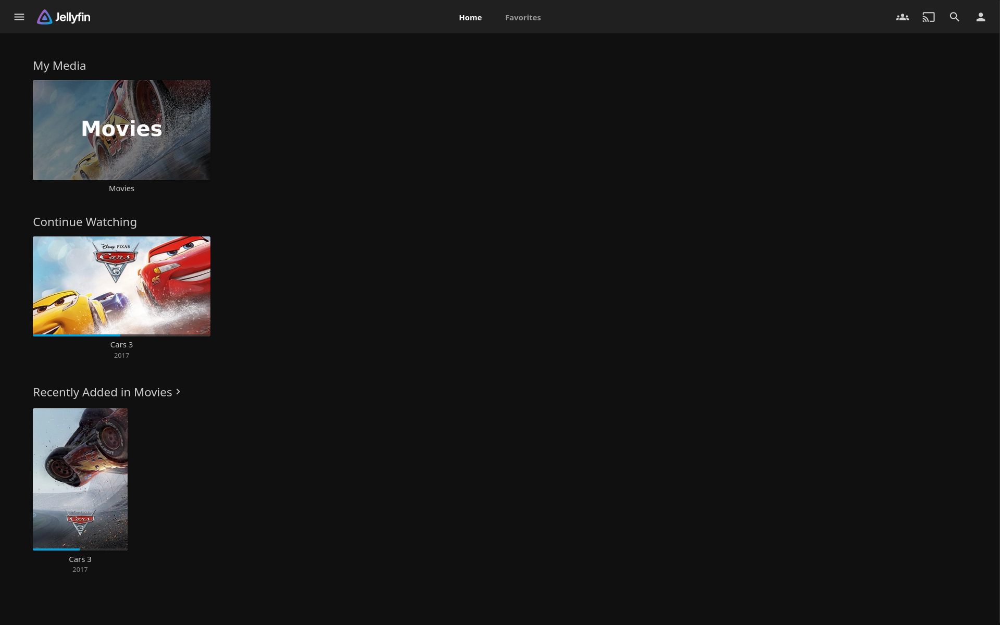

Project
Jellyfin
A self-hosted media server that allows users to stream and manage their media collection from anywhere.

Jellyfin is a free and open-source media system that puts you in control of managing and streaming your media. It is an alternative to the proprietary Emby and Plex, to provide media from a dedicated server to end-user devices via multiple apps. In this project, I set up a Jellyfin server to organize and stream my personal media collection. This involved configuring libraries, managing user access, and ensuring smooth playback across different devices. Jellyfin allows for a completely private and customizable media experience without any subscription fees or tracking.